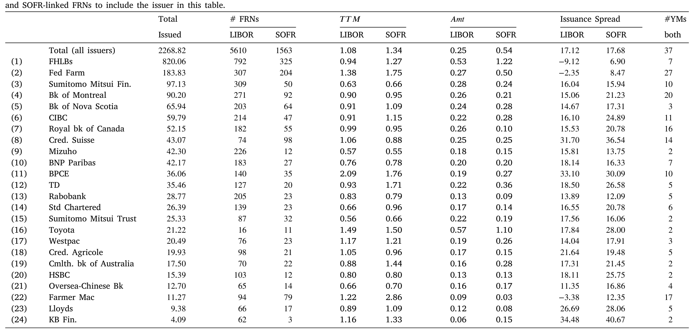
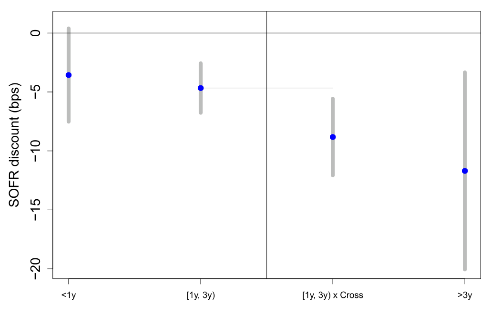
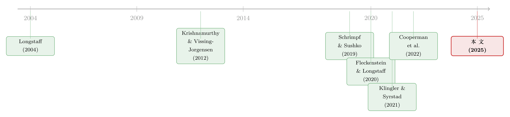

把「信用敏感」弄丢之后，借钱反而更便宜了——重读 SOFR 折价
本文读的是 Klingler & Syrstad (2025, Journal of Financial Economics)：在 LIBOR 退场、SOFR 接棒的这场史诗级转轨里，所有人都担心借款人会因为「失去信用敏感性」而吃亏，但作者用浮息债（FRN）的数据把账算清楚后发现——挂钩 SOFR 的债，经过期限匹配的衍生品利差调整以后，发行利差反而显著更低，区间在 −6.60 到 −4.56 个基点之间。他们把这笔「SOFR 折价」归因于 SOFR 浮息债更高的价格稳定性。
0 一个本该是坏消息的故事
先把舞台搭起来。
伦敦银行同业拆借利率（London Interbank Offered Rate, LIBOR）曾经是全世界最重要的一个数字——上万亿美元的贷款和浮息债，利息都钉在它身上。然后，丑闻、操纵、拆借市场萎缩，监管者决定让它退场，用担保隔夜融资利率（Secured Overnight Financing Rate, SOFR）来接替。2017 年宣布、2021 年底停发、2023 年彻底停报，时间表步步紧逼（关于这两个基准谁更「干净」、谁更经得起操纵，本博客此前聊过，可参见《给基准做体检：LIBOR 退场之后，谁更「干净」？》）。
但在这个故事里，几乎每一位市场参与者都站在监管者的对立面。他们的理由听上去无懈可击：LIBOR 里含着一个期限溢价（term premium），它对全市场的融资压力敏感，金融危机一来 LIBOR 就往上窜；而 SOFR 不过是拿美国国债做抵押的隔夜回购利率，几乎不含信用信息，危机时反而纹丝不动。对一个持有浮息债的投资者来说，LIBOR 那种「越是危机越多付你利息」的特性，本身就是一份天然的对冲（自然的资金对冲，funding hedge）。一旦换成 SOFR，这份对冲就没了。
所以银行家们写联名信、彭博和 Markit 忙着造各种「信用敏感的替代利率」（BSBY、Ameribor、AXI……），核心诉求只有一句话：别让我们用这个对融资压力不敏感的 SOFR。监管者一一拒绝。SEC 甚至甩出一句狠话，说 BSBY「跟 LIBOR 一样有倒金字塔的毛病」。
于是一个非常自然的问题摆在面前：这场被强制推行的基准转轨，到底有没有抬高浮息债的借款成本？
直觉上，答案应该是「抬高了」——你把那份对冲价值从合约里抽走，投资者要补偿，利差就该上去。这本该是一个坏消息的故事。
但本文的结论，恰恰是个反转。
1 一字之差，背后是两种定价哲学
要理解这个反转，得先把 LIBOR 和 SOFR 的差别讲透——这是全篇的「核心」，后面所有的故事都从这里长出来。
表面上，它们都是「浮动利率的锚」。但它们锚定现金流的方式完全不同：
- LIBOR 是一个期限利率（term rate）。3 个月期的 LIBOR 在每个付息季的期初就被定下来了。也就是说，时点
t要付的利息，在t−1就已经知道。它前瞻、确定，但代价是它把「整段期限的信用与流动性风险」一次性打包进了那个数字里。 - SOFR 是一个隔夜利率（overnight rate）。要把它变成季度利息，市场约定用「在后复利（in arrears compounding）」——把这一季每一天的隔夜利率滚动复利，算出来的数字直到付息日
t当天才知道。它滞后、平滑，是一段时间隔夜利率的平均。
请把注意力放在这个「平均 vs. 期初定价」的差别上，它是整篇论文的发动机。一个在期初被钉死的期限利率，意味着这一季里只要市场利率一动，这只债的现金流相对于市场就会偏离，价格就要重估；而一个在整季上做平均的隔夜复利，把短期的利率波动抹平在了平均里。换句话说，SOFR 浮息债的价格，天生就比 LIBOR 浮息债更稳。
为了让读者有个具体的画面，作者举了一只 UBS 的浮息债（CUSIP: BX9601184）：2021 年 1 月发行，原本付「3 个月 LIBOR + 100 个基点」；等 LIBOR 停报、现金流按官方建议平移过去之后，参考利率换成复利 SOFR，利差也从 100 个基点跳到了 126.161 个基点。多出来的那 26.161 个基点不是凭空加的——它正是 ISDA 在 2021 年 3 月 5 日锁定的「LIBOR 与复利 SOFR 之间五年历史中位数利差」的回退值（fallback）。
这就带出了第一个识别上的难题：既然 SOFR 利率本身系统性地低于 LIBOR，那两类债的原始发行利差根本不能直接比。事实上，从描述统计里就能看到，SOFR 挂钩债的原始利差通常更高——但这完全是个假象，因为它的浮动部分更低。直接比，是会把人带沟里的。
2 真正关键的一步：把两只债「翻译」成同一种语言
那怎么办？本文最漂亮的一步，是用衍生品市场把两类债的现金流「翻译」到同一个标尺上。
想象同一个发行人，在同一个月里发了两只浮息债，唯一的区别是：一只挂 LIBOR，一只挂 SOFR。作者的做法是，给 LIBOR 那只配一份参考 LIBOR 的利率互换（interest rate swap），给 SOFR 那只配一份参考 SOFR 的隔夜指数互换（overnight-index swap, OIS）。互换把「浮动」换成「固定」：投资者付出浮动、收回一个固定的互换利率。这样一来，两只债都被转换成了固定利率等价的现金流，理论上就可以直接比了。
用最朴素的方式写出来，每只债经过期限匹配的互换调整后，得到一个「调整后利差」：
$$ \text{AdjSpread}_i \;=\; s_i \;+\; F_i $$
这里 s_i 是债券发行时报出的利差（论文里称 issuance spread），F_i 是与该债同期限的互换利率——LIBOR 债用普通利率互换，SOFR 债用 OIS。两类债的调整后利差之差，可以拆成：
$$ \text{AdjSpread}^{\text{SOFR}} - \text{AdjSpread}^{\text{LIBOR}} \;=\; \underbrace{(s^{\text{SOFR}} - s^{\text{LIBOR}})}_{\text{raw spread gap}} \;+\; \underbrace{(F^{\text{SOFR}} - F^{\text{LIBOR}})}_{\text{maturity-matched swap basis}} $$
第二项，正是用衍生品市场量出来的「LIBOR–OIS 期限利差」。它把 SOFR 系统性偏低这一块精确地扣掉了。剩下的，才是干净的、可比的差异。
这一招的精神，和「同一份现金流为什么会卖出两个价格」是相通的——只不过这里反过来用：先借衍生品把两份名义上不同的现金流对齐，再看对齐之后还剩下什么。（关于「同样的现金流、两个价格」这一母题，可参见《同样的现金流，两个价格：当央行亲手掰断了套利这根杠杆》。）
把调整后利差作为被解释变量，回归方程大致可以写成：
$$ \text{AdjSpread}_{i} \;=\; \alpha \;+\; \beta\,\text{SOFR}_{i} \;+\; \gamma' X_{i} \;+\; \delta_{j(i),\,t} \;+\; \varepsilon_{i} $$
SOFR_i 是一个示性变量——这只债挂 SOFR 取 1，挂 LIBOR 取 0。系数 β 就是我们要的「SOFR 折价」。
而真正让识别站得住脚的，是那个 δ_{j(i),t}——发行人×月固定效应（issuer-month fixed effects）。它的含义是：只在「同一个发行人、同一个月」内部，拿它发的 LIBOR 债和 SOFR 债相互比较。任何关于这个发行人信用质量随时间起伏的、不可观测的东西，都被这个固定效应吸收掉了。它不会因为「某个月信用利差整体走阔」而污染你的估计，因为同一个月同一个发行人的两类债，都暴露在同样的信用环境里。作者还试了更宽松的「评级×月固定效应」，以及把发行规模、剩余期限都和月固定效应交乘，结论一律稳健。
3 数据：一个几乎为这个问题量身定制的实验室
样本是 2018 年 7 月到 2021 年 12 月之间、用彭博系统抓取的美元浮息债。这个起止点本身就有意义：2018 年 7 月房利美（Fannie Mae）发出第一只 SOFR 浮息债，而 2021 年 12 月之后监管彻底禁发 LIBOR 债。这中间，恰好是 LIBOR 与 SOFR 并存的窗口——也是唯一能做这种「同发行人、同月份」对照的窗口。
经过六道过滤（剔除次级、证券化、带封顶/保底、非 ACT/360 计息、缺关键信息的债等），最后剩下 7173 只浮息债、来自 56 个借款人。其中 LIBOR 挂钩 5610 只、SOFR 挂钩 1563 只，总发行量约 $2.3 万亿。SOFR 债的占比，从 2018 年三季度的 0.3% 一路爬到 2021 年四季度的 97%，一条几乎垂直的替代曲线。

Table 1
如表 1 所示，样本里最大的两个发行人是美国的政府支持机构（GSE，FHLB 与 Fed Farm），占了三分之一以上的发行量；其余主力是总部在美国以外的大型银行控股公司和跨国企业。注意表里那个看似矛盾的细节：全样本里 LIBOR 与 SOFR 的平均发行利差都在 17 个基点上下，但逐个发行人看，SOFR 的原始利差往往更高——这正是上一节说的假象，提醒我们：不调整就比，方向都可能是错的。
4 反转：折价有多大，省了多少钱
现在把调整后的利差放进回归，反转出现了。
在所有设定下，β 都显著为负，估计区间落在 −6.60 到 −4.56 个基点之间。也就是说，挂钩 SOFR 的债，经过期限匹配调整后，发行利差比挂钩 LIBOR 的债低了 4 到 7 个基点。担心的「成本上升」没有出现，出现的是一笔折价。
这不是一个统计上显著、经济上可忽略的小数。作者据此估算，仅在转轨窗口里，样本中的浮息债发行人就因此节省了高达 $669 百万的利息支出。这个量级，和 Fleckenstein & Longstaff (2020) 估计「美国财政部靠发行国债浮息债、四年间省下约十亿美元」是同一个数量级的。
而且这个折价相当皮实：换成横截面回归、换成匹配对（matched pairs）、把利差调整改成用期货合约或基差互换来做、换不同子样本——结论都在。作者甚至在二级市场上重做了一遍：尽管只有一小部分债有同时挂 LIBOR 和 SOFR 的报价，方向依然一致，SOFR 债利差更低。更狠的是，他们拿 2022 年 1 月到 2023 年 6 月这段没进主样本的数据做了样本外检验，SOFR 折价照样在。
5 折价从哪来：价格稳定性，和买它的那群人
到这里，一个自然的问题是：凭什么 SOFR 债更便宜？
作者的答案，回到了第 1 节那台发动机：价格稳定性。他们直接验证了那个机制——SOFR 浮息债的价格波动，显著小于 LIBOR 浮息债。原因前面讲过：SOFR 债付的是一整季隔夜利率的平均，期限利率的那种「期初定死、季中市场一动就偏离」的毛病被抹平了。
但「谁在乎价格稳不稳」这件事，要看谁在买。本文一个很关键的事实是：浮息债的主力买家是货币市场基金（Money Market Mutual Funds, MMFs），它们平均持有样本里 54% 的浮息债。而 MMF 对按市值计价（mark-to-market）的稳定性有近乎刚性的偏好——这正是 Fleckenstein & Longstaff (2020) 早就指出的：MMF 愿意为国债浮息债的市值稳定性付一笔便利溢价。本文把这条逻辑往前推了一步：原来投资者为浮息债稳定性付的那笔钱，取决于参考利率的类型；挂隔夜利率（而非期限利率）的债，因为更稳，额外多带了一层便利溢价。
如果这个机制是对的，它应该留下两条可证伪的指纹：
第一，利率越不确定，折价越大。 在利率波动（interest rate volatility）升高的时期，期限利率「期初定死」的劣势被放大，SOFR 的平滑优势更值钱。数据正是如此——而且这个模式只对利率波动成立，换成股市波动（VIX）就不灵。这一点很重要：它说明折价是利率不确定性的故事，不是泛泛的「风险厌恶上升」。
第二，发行人越安全，折价越大。 价格稳定性这层好处，在信用风险低的债上最「看得见」（一只本来就快违约的债，价格的那点平滑根本不是矛盾的主要方面）。数据里，折价确实在样本里最安全的发行人那里最强。
这条横截面证据还顺手挡掉了一个质疑：会不会折价根本不是浮息债市场的事，只是衍生品市场利差定价的副产品？如果是后者，折价不该随发行人安全度系统性地变。它变了，所以这是浮息债市场自己的故事。
6 是法律，还是经济？——把转轨期的「噪声」剥出来
故事到这里其实已经很完整了。但作者没有停手，因为一个挑剔的读者一定会问：你这个折价，会不会只是「转轨期的法律恐慌」？
逻辑是这样的：那些到期日晚于 LIBOR 停报的债，投资者要承担更多法律风险（万一借款人不肯付那个更高的 SOFR 利差怎么办？），所以这些债可能被压价，制造出一个虚假的「SOFR 更便宜」。
作者把样本按这条线切开。结果是：到期日晚于停报日的债，折价确实更大——但到期日早于停报日、根本不沾法律风险的那批债，SOFR 折价依然在统计上和经济上显著。

Figure 5: illustrates the coefficients for the four different categories
如图 5 所示，把样本分成不同类别后，折价并不是只集中在「有法律风险」的那一格。这说明：法律担忧只能部分解释折价，本文的发现并不是转轨期独有的怪现象。作者还做了一个很精巧的检验——2020 年 11 月，监管把美国 LIBOR 的停报日从 2021 年 12 月推迟到 2023 年 6 月。如果法律不确定性真的在压价，那这次推迟（等于延长了不确定性）应该在 2021 年 12 月到 2023 年 6 月之间引用 LIBOR 的债上留下痕迹。结果是：一个小但统计显著、约 1 个基点的价格上行。方向对、量级小——恰好印证「法律因素真实存在，但只是配角」。
文献脉络
把这篇论文放回它生长的那条藤上，会看得更清楚。
它其实是两条河流的交汇处。
一条河，是关于利率基准转轨本身。Schrimpf & Sushko (2019) 和 Klingler & Syrstad (2021，也就是作者自己的《Life after LIBOR》) 指出，从 LIBOR 换到隔夜利率，最大的变化是丢掉了期限溢价。紧接着，Jermann (2019)、Cooperman et al. (2022) 等人从另一个角度论证：一个不可操纵、且对信用敏感的基准，给投资者提供了一份天然的资金对冲——这正是市场参与者死守「信用敏感利率」的理论依据。这条线的整体情绪是警惕：转轨是有代价的。
另一条河，是关于安全资产的便利溢价（convenience premium）。从 Longstaff (2004) 的国债「流动性逃逸溢价」，到 Krishnamurthy & Vissing-Jorgensen (2012) 把它系统化为对国债的总需求，再到 Nagel (2016) 把它和短期利率联系起来——投资者愿意为「安全、流动」接受更低的收益。离本文最近的，是 Fleckenstein & Longstaff (2020)：MMF 为国债浮息债的市值稳定性付费。

本文站在两条河的汇口上，做了一件别人没做的事：它不去争论「该不该用信用敏感利率」，而是直接把账算出来——结果发现，被所有人担心的转轨，对借款人不是成本而是折价；而这笔折价的来源，恰恰是第二条河里的「价格稳定性便利溢价」，只不过本文证明了这层溢价取决于参考利率是隔夜的还是期限的。一边的「警惕」叙事被反转，另一边的「便利溢价」叙事被推广。这就是它的位置。
顺带一提，「便利收益取决于资产的某个细微特征」这个母题，在国债市场也有漂亮的对照——德国孪生国债里那两种便利收益，可参见《绿色溢价真的归零了吗？——藏在德国孪生国债里的两种「便利收益」》；而「无风险资产是被制度制造出来的」这层底色，可参见《无风险国债是「制造」出来的》。
评论与延伸（Q&A + 研究方向）
(a) 几个可能的疑问
Q：原始利差里 SOFR 债明明更高，为什么调整后反而更低？这中间会不会是调整方法在「做手脚」？
不是做手脚，是必须做。SOFR 利率系统性低于 LIBOR，所以 SOFR 债浮动部分天生更低、为补偿就报一个更高的固定利差——这是机械关系，不是定价信息。期限匹配的互换/OIS 调整，做的正是把这块机械差异精确扣掉。作者还用期货、基差互换等多种方式重做调整，方向不变，说明结论不依赖某一种调整口径。
Q：「SOFR 折价」和「LIBOR 的期限溢价」是不是一回事，换了个名字？
不是。期限溢价是 LIBOR 利率水平里那块对信用/期限风险的补偿，调整后利差已经把它扣掉了。SOFR 折价是在扣掉利率水平差异之后还多出来的那 4–7 个基点，来源是债券价格的稳定性（二阶矩），而不是利率水平（一阶矩）。一个讲的是收益高低，一个讲的是价格抖不抖。
Q：发行人×月固定效应真的够干净吗？同一个月里，会不会发行人专门挑「自己信用看起来好的时候」发 SOFR 债？
固定效应吸收的是「发行人×月」层面所有共同的信用波动，这已经很强。残留的担心是债券层面的选择（比如同月内把更优质的条款放进 SOFR 债）。作者用发行规模、剩余期限与月交乘来缓解，但「同一发行人为何在同月发两种基准的债」这个发行选择，仍是识别上最值得继续盯的地方。
Q：折价只在利率波动高时才强，会不会说明它只是个转轨期的暂时现象，转轨一结束就消失？
样本外检验（2022 年 1 月–2023 年 6 月）里折价依然在，且到期日早于停报、不含法律风险的债也有折价，这两点都指向「不是转轨独有」。但「利率波动高时更强」确实意味着它是状态依赖的——在利率极度平静、隔夜复利的平滑优势不值钱的环境里，折价会收窄。这不是消失，是随利率不确定性呼吸。
Q：MMF 持有 54%，会不会折价只是这一类买家的偏好，换一批投资者就没了？
很可能正是 MMF 的市值稳定性偏好在定价——这恰恰是机制的一部分，不是反驳。但它也限定了外部有效性：在 MMF 不是主力买家的市场（比如很多长久期信用债、银团贷款），这层稳定性溢价未必同样大。作者自己在附录里就坦承，贷款市场的量化困难得多。
Q：那银行家们的担心（失去信用敏感性=失去对冲）到底错了吗？
没错，只是放错了市场。在浮息债市场，买家是看重市值稳定的 MMF，他们要的本来就不是「危机里多收点利息」，而是「价格别抖」，所以 SOFR 反而对胃口。但在银团贷款市场，放贷的银行确实需要一个对自身融资成本敏感的基准——本文的折价不能消除「转轨可能损害未来贷款供给」这个担忧。结论是市场特定的。
(b) 几个可能的研究问题与提案
1. 把这套「调整后利差」搬到公司债的信用利差上去
【经济故事】本文的对象是浮息票据，主力买家是 MMF。一个自然的延伸是：在更长久期、买家结构完全不同（保险、养老金、共同基金）的公司信用债里，参考利率切换会不会同样产生稳定性溢价，还是被久期与信用风险淹没？这直接回答「SOFR 折价的外部有效性边界在哪」。 【可行性】中。需要 TRACE 成交 + Mergent FISD 发行档案 + 衍生品利差，识别上很难复制「同发行人同月两种基准」的天然对照，多半要退而求其次用基准切换前后的事件研究，平行趋势是主要威胁。
2. 外资发行人维度：货币与基准的双重选择
【经济故事】样本里大量发行人是总部在美国以外的银行（加拿大、日本、欧洲）。这些跨国发行人在选择「用美元发、挂哪种基准」时，其决策可能和它的全球资金来源、CIP 偏离（covered interest parity）联动。把 SOFR 折价拆到「本币 vs 外币发行人」上，能检验稳定性溢价是否被跨境套利渠道改变。 【可行性】中。发行人国别、货币、基准在彭博/FISD 里都有；难点是把 OIS/互换基差按货币对齐，并把 CIP 偏离作为协变量。和《一封邮件，如何掀动一国的汇率与套利定价？》的思路可互相借力。
3. MMF 持仓微观数据下的需求弹性
【经济故事】既然机制落在 MMF 的市值稳定性偏好上，那就该直接看 MMF 的持仓：在利率波动上升时，MMF 是否系统性地把组合从 LIBOR 债倒向 SOFR 债？这能把「价格更稳→折价」的因果链补上中间一环——需求侧的直接证据。 【可行性】高。MMF 月度持仓有 N-MFP 监管披露，可与本文的债券层面数据按 CUSIP 合并，做需求弹性/组合再平衡回归。识别上可用利率波动冲击作为外生变动。
4. 流动性维度：折价里有多少其实是流动性溢价？
【经济故事】本文把折价归给「价格稳定性」，但价格更稳的债往往也更好出手。稳定性溢价和流动性溢价在浮息债里可能纠缠在一起。用二级市场买卖价差（bid–ask，表 2 里就有）把流动性那一块单独估出来，再看剩下的「纯稳定性」折价还有多少，是个干净的分解题。 【可行性】高。本文已构建二级市场报价样本，加上成交数据即可做利差分解；难点是稳定性与流动性的工具变量分离。
5. 推广到其他法域：欧元区/日本的「事前」预测
【经济故事】欧元区、日本也在考虑从信用敏感的期限利率转向隔夜利率（如 Tuckman, 2023 所述）。本文给了一个可证伪的预测：这些市场的浮息债发行人也应享受 SOFR 式折价，且越安全、利率越不确定时越大。用美国的已实现折价去校准、对欧日做事前预测，再用它们真实转轨的数据回检，是个漂亮的「预测—验证」设计。 【可行性】中偏低。欧日浮息债市场更薄、并存窗口更短，能否凑出「同发行人同月两种基准」的样本是最大不确定性。
我的判断
这篇论文的贡献，干净利落：它是第一篇把「借浮息债的成本」和「参考利率类型」直接挂钩的实证工作，而且给出了一个反直觉但站得住的结论——被所有人当成代价的 SOFR 转轨，对浮息债发行人其实是一笔折价。更难得的是，它没有停在「发现一个利差」上，而是用利率波动的交互、发行人安全度的横截面、以及法律风险的切分，三路夹击把机制（价格稳定性的便利溢价）钉死，并主动排掉了「衍生品定价副产品」和「转轨期法律恐慌」这两个最像的替代解释。−6.60 到 −4.56 个基点、$669 百万的节省，量级真实可信。
对识别，我最在意的还是发行选择那一环：发行人×月固定效应吸收了发行人层面的共同波动，但「为什么同一个发行人在同一个月既发 LIBOR 又发 SOFR、两只债在条款上是否系统性不同」，这一层债券级的内生性，固定效应管不到，控制变量也只能缓解。如果能拿到承销层面的数据、看清这两类债是不是卖给了不同的投资者群体，会让结论更硬。
后续我最想看到的，是把这套逻辑搬进信用市场和外资持有人的世界：当买家不再是偏好市值稳定的 MMF、当债券久期拉长、当发行人横跨多个货币区，这层「隔夜 vs 期限」的稳定性溢价还剩多少？那才是检验它究竟是 MMF 的特例、还是一条普遍定价规律的试金石。
参考文献
Berndt, A., Duffie, D., Zhu, Y. (2022). Across-the-curve credit spread indices. Financial Markets, 1–16.
Cooperman, H., Duffie, D., Luck, S., Wang, Z., Yang, D. (2022). Bank Funding Risk, Reference Rates, and Credit Supply. Working paper, Stanford University.
Fleckenstein, M., Longstaff, F.A. (2020). Renting Balance Sheet Space: Intermediary Balance Sheet Rental Costs and the Valuation of Derivatives (and related work on Treasury FRN mark-to-market stability).
Klingler, S., Syrstad, O. (2021). Life after LIBOR. Journal of Financial Economics, 141(2), 783–801.
Klingler, S., Syrstad, O. (2025). The SOFR discount. Journal of Financial Economics, 164, 103989.
Krishnamurthy, A., Vissing-Jorgensen, A. (2012). The aggregate demand for treasury debt. Journal of Political Economy, 120(2), 233–267.
Longstaff, F.A. (2004). The flight-to-liquidity premium in US treasury bond prices. Journal of Business, 77(3), 511–526.
Nagel, S. (2016). The liquidity premium of near-money assets. Quarterly Journal of Economics, (December), 1927–1971.
Schrimpf, A., Sushko, V. (2019). Beyond LIBOR: A Primer on the New Benchmark Rates. Working paper, Bank for International Settlements.
Tuckman, B. (2023). Short-term rate benchmarks: The post-LIBOR regime. Annual Review of Financial Economics, 15.